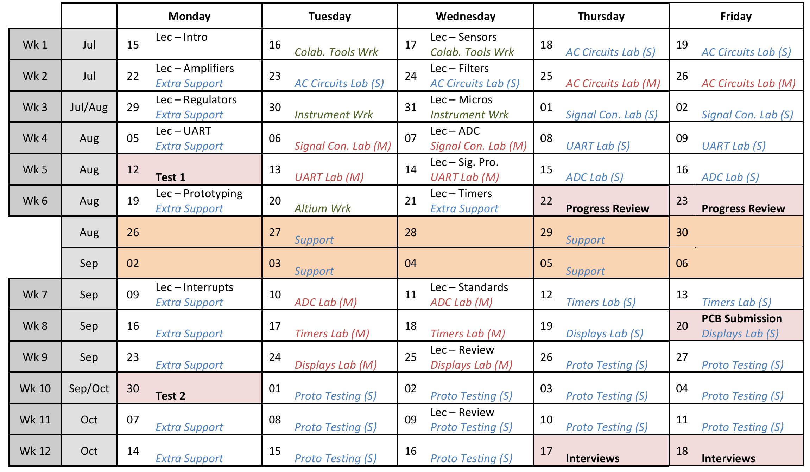
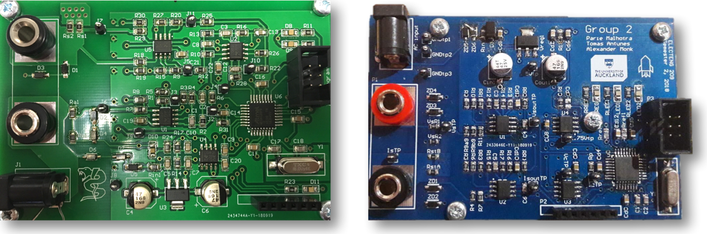
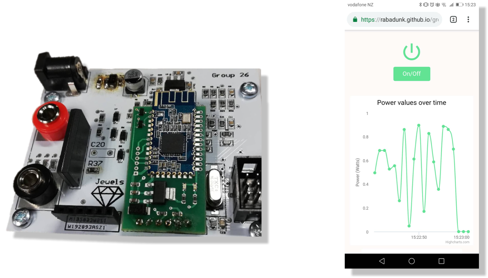
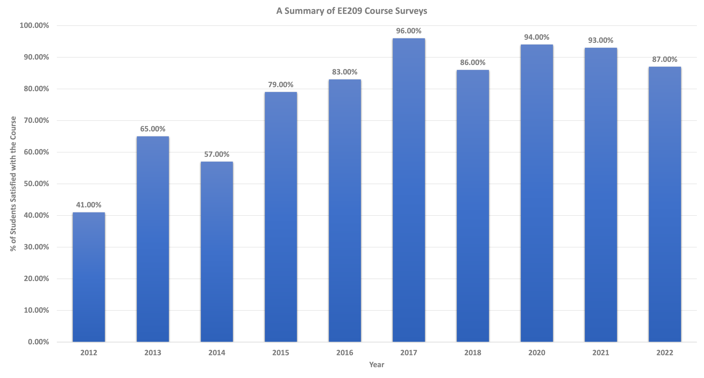
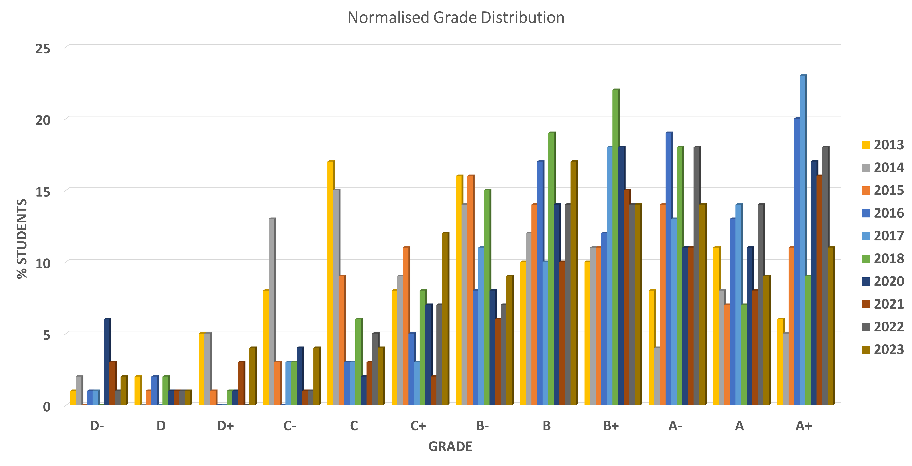

class: title-slide count: false .logo-title[] ## ELECTENG 209 # Analog & Embedded Software Design ### An Introduction to the Course .TitleAuthor[Duleepa J Thrimawithana] --- layout: true name: template_slide .logo-slide[] .footer[[Duleepa J Thrimawithana](https://www.linkedin.com/in/duleepajt), Department of Electrical, Computer and Software Engineering (2020)] --- name: S1 # Background - High reliance on fossil fuels and associated issues have become increasingly more evident over the last two decades - Human-made climate change due to emissions is one of the most alarming concerns .center[ <iframe width="560" height="315" src="https://www.youtube-nocookie.com/embed/Gz_L6KuqvFI?start=0&end=84" frameborder="0" allow="accelerometer; autoplay; encrypted-media; gyroscope; picture-in-picture" allowfullscreen></iframe> ] --- name: S2 # Renewable Energy - Increasing emphasis on renewable generation, efficient conversion, sustainable utilization and electrification of transportation - Many countries have pledged to reduce emissions .center[ <iframe width="560" height="315" src="https://www.youtube-nocookie.com/embed/1kUE0BZtTRc?start=0&end=135" frameborder="0" allow="accelerometer; autoplay; encrypted-media; gyroscope; picture-in-picture" allowfullscreen></iframe> ] --- name: S3 # Distributed Generation - Decentralized energy generation (DEG) is gaining popularity due to social, economical and environmental benefits it offers - Energy is generated locally at or near point of consumption using micro-scale renewable systems .center[ <iframe width="560" height="315" src="https://www.youtube-nocookie.com/embed/dA76xquzQFo?" frameborder="0" allow="accelerometer; autoplay; encrypted-media; gyroscope; picture-in-picture" allowfullscreen></iframe> ] --- name: S4 # Energy Management .left-column[ - Managing energy flow in a DEG systems is very challenging - Many distributed sources, loads and storage systems need to be concurrently managed - A smarter grid with many smart sensors that monitor the flow of energy is a key solution - Enables making smart decisions to effectively manage the generation, utilization, storage and retrieval of energy - Smart appliances, storage systems and controllers use this information to control the energy flow - Many smart metering/monitoring solutions have been developed - Smart meters report house-hold consumption to retailer - Smart energy monitors can monitor energy consumed by a specific load ] .right-column[ .center[<img src="img/monitors.png" width="190px">] ] --- class: title-slide layout: false count: false .logo-title[] # Renewable Energy Research at UoA ### A Few Examples --- layout: true name: template_slide .logo-slide[] .footer[[Duleepa J Thrimawithana](https://www.linkedin.com/in/duleepajt), Department of Electrical, Computer and Software Engineering (2020)] --- name: S5a # Drive to Achieve Zero Emissions by 2050 - Research on climate change predicts that if we do not achieve **zero emissions** by 2050 the damage to the [natural ecosystem will be irreversible](https://www.youtube.com/watch?v=bNKdlnoAqIs) - Electronics is a key enabling technology that would help achieve a zero emission future .center[ <iframe width="560" height="315" src="https://www.youtube.com/embed/2bXn2F58OsM" frameborder="0" allow="accelerometer; autoplay; clipboard-write; encrypted-media; gyroscope; picture-in-picture" allowfullscreen></iframe> ] --- name: S5 # Research Groups - Across UoA, specially in FoE, there are many research groups working on various renewable energy related research projects - Power electronics research group at ECSE is at the forefront of this research .center[<img src="img/RenewableResearch.png" height="300px">] --- name: S6 # The Power Electronics Research Group .center[<img src="img/PEGROUP.gif" height="430">] --- name: S7 # Pioneers in Wireless Power Transfer (WPT) .center[ <iframe width="784" height="441" src="https://www.youtube-nocookie.com/embed/G1q1HZLQ528?" frameborder="0" allow="accelerometer; autoplay; encrypted-media; gyroscope; picture-in-picture" allowfullscreen></iframe> ] --- name: S7b # PE Group Connections - Power electronics research group at ECSE is well connected with top ranking universities as well as industry (a few of these connections are shown below) .center[<img src="img/Connections.png" height="350">] --- name: S8 # PE Research Facilities & Postgraduates .center[ <iframe width="784" height="441" src="https://www.youtube-nocookie.com/embed/RWi0JvKrcLY" frameborder="0" allow="accelerometer; autoplay; encrypted-media; gyroscope; picture-in-picture" allowfullscreen></iframe> ] --- name: S9 # ECSE 2nd Years Undertaking Research .center[ <img src="img/PatrinBashar.png" height="375"> .credits[ Bashar Dawood (left) & Patrin Illenberger (right) showcasing their summer research projects (2012). ] .credits[ Currently Bashar works as the Managing Director at NGen Automation and Dr. Illenberger works as a hardware engineer at Apple. ] ] --- name: S10 # ECSE 3rd Years Undertaking Research .center[ <img src="img/RyanWynand.png" height="375"> .credits[ Ryan Kurte (left) & Wynand Malan (right) showcasing their summer research projects (2012). ] .credits[ Currently Ryan works as a R&D engineer at Datamars and Dr. Malan works as a Hardware Development Manager at Apple. ] ] --- name: S11 # ECSE Final Years Undertaking Research .center[ <iframe width="672" height="378" src="https://www.youtube.com/embed/o9-tELjV1wQ" frameborder="0" allow="accelerometer; autoplay; encrypted-media; gyroscope; picture-in-picture" allowfullscreen></iframe> .credits[ Hamish O'Neill & Roman Amor showcasing their final year research project (2018). ] .credits[ Currently Hamish works as a hardware engineer at Apple and Roman works as a firmware engineer at Apple. ] ] --- name: S12 # Intro to Power Electronics (ELECTENG 734) .center[ <iframe width="672" height="378" src="https://www.youtube-nocookie.com/embed/bP4099oz7KU" frameborder="0" allow="accelerometer; autoplay; encrypted-media; gyroscope; picture-in-picture" allowfullscreen></iframe> .credits[ Students design and develop the power electronics required to wirelessly power a RC car. The best teams compete on the last day ] .credits[ of the semester each year to find a winner. This is the final race, in 2018, where the top 2 teams were equally matched. ] ] --- name: S13 # ELECTENG 734 Prizegiving .center[ <img src="img/EE734_2018.png" height="325"> .credits[ Prizegiving (left) & finalists (right) showcasing their final designs (2018). ] .credits[ Sumant, Kunal and a few other engineers from Apple attended the event. ] ] --- class: title-slide layout: false count: false .logo-title[] # Design of a Smart Energy Monitor ### Project Information --- layout: true name: template_slide .logo-slide[] .footer[[Duleepa J Thrimawithana](https://www.linkedin.com/in/duleepajt), Department of Electrical, Computer and Software Engineering (2020)] --- name: S14 # The Project - What is this course about and what should you expect to learn? - Gives you an opportunity to put in to practice some of the theories (analog electronics & embedded software development) you learnt to design and engineer a solution to a 'real life problem' - During this process you will gain fundamental knowledge, experience, skill-set and professional behavior needed to succeed in the more challenging design projects you will engage in the future - What would you design and engineer during this course? - An energy monitor to measure and display the amount of energy consumed by a household appliance - How would you achieve this task? - The voltage and current at the input to appliance is measured using __analog circuitry__ consisting of sensors, amplifiers and filters - An __embedded software program__ executed on a microcontroller converts the analog signals to digital form and calculates the energy consumption together with other important information - The information is shown on a __local LCD display__ and also communicated __wirelessly using Bluetooth__ with other smart devices --- name: S15 # System to Implement - To simplify the design, we will consider a scaled-down system, which uses a low-voltage AC source - The AC source frequency is 500 Hz (oppose to 50 Hz grid frequency) to reduce the size of the AC load - An AC load, consisting of a variable resistor in series with a fixed inductor, is used to emulate an house-hold appliance .center[<img src="img/System.png" height="275">] --- name: S16 # Key Design Specifications <table class="tg" style="undefined;table-layout: fixed; width: 647px; margin-left:auto; margin-right:auto;"> <colgroup> <col style="width: 333px"> <col style="width: 314px"> </colgroup> <thead> <tr> <th class="tg-dzaw"><span style="color:white">Parameter</span></th> <th class="tg-dzaw"><span style="color:white">Value</span></th> </tr> </thead> <tbody> <tr> <td class="tg-jayl">Source Voltage</td> <td class="tg-jayl"> 14 V<sub>RMS</sub> ± 10% </td> </tr> <tr> <td class="tg-sabo">Source Frequency </td> <td class="tg-sabo"> 500 Hz ± 2% </td> </tr> <tr> <td class="tg-ig71">Load Range</td> <td class="tg-ig71"> 2.5 VA to 7.5 VA </td> </tr> <tr> <td class="tg-sabo">Load Power Factor</td> <td class="tg-sabo">0.6 to 0.99</td> </tr> <tr> <td class="tg-ig71">Measurement Accuracy</td> <td class="tg-ig71">5% of full-scale reading</td> </tr> <tr> <td class="tg-sabo">ADC Conversion Rate</td> <td class="tg-sabo">10 kHz or slower</td> </tr> <tr> <td class="tg-ig71">MCU System Clock</td> <td class="tg-ig71">2 MHz</td> </tr> <tr> <td class="tg-sabo">LCD Display Information</td> <td class="tg-sabo">Voltage (V<sub>rms</sub>), Current (mA<sub>pk</sub>), Power (W)</td> </tr> <tr> <td class="tg-ig71">LCD Scroll Rate</td> <td class="tg-ig71">1 s</td> </tr> <tr> <td class="tg-sabo">UART Baud Rate</td> <td class="tg-sabo">9600 Baud</td> </tr> <tr> <td class="tg-jayl">Information Transferred Via UART</td> <td class="tg-jayl">Voltage, Current, Power and Energy</td> </tr> <tr> <td class="tg-096r">PCB Size</td> <td class="tg-096r">20000 mm² </td> </tr> <tr> <td class="tg-jayl">PCB Technology</td> <td class="tg-jayl">Double Layer with PTH</td> </tr> <tr> <td class="tg-096r">Device Technology </td> <td class="tg-096r">TH and SMT</td> </tr> </tbody> </table> --- name: S17 # Demo of Expected Final Design .center[<img src="img/Demo.png" height="450">] --- name: S18 # Working in Teams - You will work in a team of 4 - You can chose your team members and register your group details on Canvas by the end of 1st week - All team members should be from the same lab stream - Throughout the project work as a team and aim to support each other - This is an important part of preparing to be a professional engineer - You depend on each other to do well in this course - Plan your work, document your work and communicate regularly with your team members - Use a logbook to plan and document your work - Use [Slack](https://slack.com/intl/en-nz/) and [Zoom](https://zoom.us) for team communications - Use [GitHub](https://github.com) and [G Suite](https://gsuite.google.com)/[Office 365](https://www.library.auckland.ac.nz/services/it-essentials/computer-facilities/software-personal-use/microsoft-student-advantage-office-365) products to collaborate with team members - Be patient with your team members even if they are not making much progress during the initial stage - If things are not working out, after about 1-2 weeks, let us know - If a member is not engaging in team work we will ask that person to work alone --- name: S19 # Course Calendar .center[] --- name: S20 # Top Designs from the Past (PI) .center[ <img src="img/2016Designs.png" height="325"> .credits[ SMT designs with a digitally controlled gain stage (left) & a LCD screen (right) developed by teams in 2016. ] ] --- name: S21 # Top Designs from the Past (PII) .center[  .credits[ A couple of the SMT designs that were developed by teams in 2018. ] ] --- name: S22 # Top Designs from the Past (PIII) .center[  .credits[ A [web application](https://rabadunk.github.io/group26/) developed by a team in 2018 to log information. ] ] --- name: S23 # Course Feedback .center[  ] --- name: S24 exclude: true # Entry Performance .center[ <img src="img/EntryGPAStats.png" height="450"> ] --- name: S25 # Past Grades .center[  ] --- name: S26 # How to Get an Excellent Grade - Is the project challenging? - Yes, because this is your first real-world engineering design project - Due to lack of experience it is common to encounter unforeseen design and integration issues when developing a system, especially with a hardware-software interface - What are the most challenging aspects? - Time management, planing and team work are the key challenges - As in a real life project, resources are limited (time, teams' availability, lab space, equipment, software licenses, etc.) and therefore last minute frantic endeavour will not help - How could I get an excellent grade? - Enjoy designing a real-world product and be passionate about your design (this is the key ingredient) - Plan and manage your and your team members' time well - Throughout the semester you are expected to spend about 12 hours a week on the project - Make full use of all lab sessions and staff support provided (there will be in average of about 10 support hours a week) --- name: S26B # Lab Access Restrictions - The faculty has reduced the lab access hours - You will have guaranteed access to the lab only during the scheduled lab sessions - You may be able to access the lab outside these sessions between 8am and 6pm on weekdays (subject to availability of the lab space) - You will not be able to access the labs during weekends - You are expected to plan your work and use the lab time effectively as it would be difficult to complete the project without access to the resources in the lab - To help, we have significantly reduced the course contents and the project requirements - We will provide a partially assembled PCB and a partially developed firmware to help you get started - We will not be able to support you to develop your own PCB with additional 'cool features' - If you are unable to complete the project due to the lab restrictions, please present your concerns at the Faculty Staff-Student Consultative Committee - If you would like to improve your design skills, you may consider taking the optional tasks scheduled for the mid-semester break --- name: S27 # Poor Exemplars - Last Minute Endeavour (PI) .center[ <img src="img/PoorEg1.png" height="390"> .credits[ Undergraduate laboratories just a day before the due date - taken by a student at about 11.50 PM (2014). ] ] --- name: S28 # Poor Exemplars - Last Minute Endeavour (PII) .center[ <img src="img/PoorEg2.png" height="390"> .credits[ Consequences of last minute work. ] ] --- class: title-slide layout: false count: false .logo-title[] # Assessment Components ### Details on How to Prepare --- layout: true name: template_slide .logo-slide[] .footer[[Duleepa J Thrimawithana](https://www.linkedin.com/in/duleepajt), Department of Electrical, Computer and Software Engineering (2020)] --- name: S29 # Assessment Components - All assessment components are compulsory - It is compulsory to satisfactorily complete all components to obtain a passing grade - Although this project will be undertaken in design teams of 4, you will be assessed individually <table class="tg" style="undefined;table-layout: fixed; width: 647px; margin-left:auto; margin-right:auto;"> <colgroup> <col style="width: 383px"> <col style="width: 264px"> </colgroup> <thead> <tr> <th class="tg-dzaw"><span style="color:white">Component</span></th> <th class="tg-dzaw"><span style="color:white">Weighting</span></th> </tr> </thead> <tbody> <tr> <td class="tg-jayl">Test 1 & 2 (Written and Simulation Components)</td> <td class="tg-jayl"> 45% </td> </tr> <tr> <td class="tg-sabo">Lecture Quizzes (Available for 24 Hrs) </td> <td class="tg-sabo"> 5% </td> </tr> <tr> <td class="tg-ig71">Weekly Lab Assignments</td> <td class="tg-ig71"> 15% </td> </tr> <tr> <td class="tg-sabo">Midsemester Progress Review </td> <td class="tg-sabo">6%</td> </tr> <tr> <td class="tg-ig71">Final Interview</td> <td class="tg-ig71">14%</td> </tr> <tr> <td class="tg-sabo">Project Deliverables </td> <td class="tg-sabo">12%</td> </tr> <tr> <td class="tg-ig71">PCB Submission</td> <td class="tg-ig71">3%</td> </tr> </tbody> </table> --- name: S30 # Tests, Lecture Quizzes & Labs - The two 22.5% tests will be conducted during weeks 5 and 10 of the semester - The written part of the tests will assess your understanding of fundamental concepts - The laboratory component of the 1st test could involve LTspice, coding and intrumentation - The laboratory component of the 2nd test could involve coding, simulations and breadboarding/testing - During each of the 15 lecture, we will conduct a 0.5% quizzes using Canvas to evaluate your engagement - Quizzes will be available for 72 hours and you are allowed 3 attempts - The maximum marks you can get will be capped to 5% - The 6 lab assignments are designed to guide you through the design and advance your understanding - Allow plenty of time, especially if you have forgotten the EE101, EE291 & CS201 contents - You can work as a team, but your understanding will be __assessed individually__ - We will use one of the two weekly lab sessions to help you complete these assignments - The remaining weekly lab session will be used to assess your solutions (1%), understanding and engagement (1%) and use of collaboration tools and documentation (0.5%) --- name: S31 # Progress Review, Interview & Deliverables - Just before the mid-semester break we will review your progress - An analog circuit that meets all the needs of the project needs to be successfully designed, simulated and validated - An embedded software program that can transmit data from the ATmega328P/PB via UART to a terminal should be successfully implemented and validated - A short interview will be held to assess your circuit (2%), software (1%) and your understanding (3%) - During the last week of the semester there will be an interview to evaluate your design as well as your understanding of the subject matter - Design will be evaluated based on functionality (4%), measurement accuracy (4%) and quality (3%) - We will check how well you have used logbook/Trello, GitHub and Slack to plan, manage and document the work (1%) - Theoretical and practical knowledge of electronics (7%) and programming (7%) concepts you gained during the project will be assessed __individually__ during the interview --- name: S32 # PCB Submission - You are expected to be familiar with the fundamentals of PCB design using Altium Designer - This is the only course in your undergraduate degree where you will be taught how to design a PCB using Altium Designer - You will be provided with an example PCB design to replicate as the primary objective of this course is to introduce you to the PCB design process and the tool (Altium Designer) - You will not be able to use your PCB design in the final prototype due to the time constraints - You are required to use the partially assembled PCB we will provide you --- name: S33 # Collaborating with Team Members - To be a good engineer you also need to develop a number of *soft-skills* - Some of the key skills you should aim to develop are management, teamwork and communication - One of the primary responsibilities you will have as an engineer is to tell other engineers how to build, service, use and update a product you have been involved in designing/developing/building/testing/etc. - Thus, engineers are expected to document all details about their work in a logbook - The information recorded in a logbook include, design notes, design decisions, calculations, software flow diagrams, schematics, meeting minutes, etc. - In industry, many different digital tools are used to help with managing teamwork work, communicating with team members and documenting details of the project - Slack and GitHub are a few such most commonly used and simple to use tools - In this project all students are expected to use a logbook together with Slack and GitHub to effectively plan, manage and document the work - We will regularly check how you use these tools as part of the assessment process --- name: S34 # Resources & Flexible Learning - Duleepa Thrimawithana (course director), Grant Covic and Jackman Lin, from the academic staff, will be looking after this course - Tracey Sheng are your technical facilitators - Teaching assistance (TAs) will be available to help with lab assignments and the project - Rupert Power, Laurance Li, Kunal Kundanam, Eshan Behravan, Osama Almulla. Bharat Vardani, Cody Liu, Brian Gu, Briony Forsberg, Ross Porter, Suzanne Lo, Sree Bommineni, Shaorong Liu, Sam Skinner, Ethan Kyle, James Bao, Fraser McDowell, Simon Alexander, Tai Wei Loh, Daniel Kwon, Campbell Wright, Zoe Ries, Emanuel Phan, Arnesh Sharma and Mekal Covic are your TAs - You could get support in-person during the dedicated lab sessions shown on the lab planner - We will also provide support remotely using Ed Discussions, Slack and Zoom - You may also request additional staff assisted evening support/tutorial sessions (online or on-campus) - Recorded media will be provided to support your learning - We will communicate all course related information via Canvas and Slack --- name: S34B # Winter & Respiratory Viruses - The course will be delivered in person - There are about 160+ students in this course and they are supported by about 20+ TAs - Health and safety of everyone is a priority and so, if a TA is ill we would have to find replacements - We need to try and minimize the spread of respiratory viruses especially since it is winter - If you are sick, you can participate virtually in support and assessment sessions (or in some cases you can request to reschedule your assessments) - At times we may have TA shortages and might be forced to conduct support and assessment sessions virtually (or reschedule assessment times) - We will discuss with affected students and organize alternatives - If you test positive for COVID and think you have had contact with TAs during infectious time period notify Duleepa --- name: S35 # Enrolment & Software Installation - Prerequisite for this course are ELECTENG 291 (or ELECTENG 202) and COMPSYS 201 - If you have failed any of these courses, please contact us to check if your enrolment is still valid - Students are also expected to have passed ELECTENG 101 - ELECTENG 209 heavily relies on the knowledge you should have gained from core ECSE papers (i.e. ELECTENG 101, ELECTENG 202/291 and COMPSYS 201) - To help you revise, teaching material from these courses are also made available through the Canvas page for ELECTENG 209 - In some cases, even if you do not meet the prerequisites, after an interview, we may allow you to continue with the course, but we will have to partner you with a suitable group - Contact Duleepa for more information - Follow details on Canvas or the [course website](https://uoa-ece209.github.io/extra.html) to get setup on Ed Discussions, Slack and GitHub - Guides detailing how to obtain and install your personal copy of the software we will use in this course (Atmel Studio, Proteus VSM, Altium Designer, LTspice, GitHub Desktop, etc.) are available --- name: S36 # Building a Prototype - This is a design project and you are expected to develop a hardware prototype - This includes breadboarding, assembling PCBs, testing hardware, building final prototype, etc. - We will provide resources and tools to get started on the project before you get to the stage of building your own prototype analog circuitry (using the provided partially assembled PCB) - You can use Proteus VSM and the Xplained Mini development boards to develop and validate most of your software - We will provide a hardware emulator that can be connected with the Xplained Mini for further debugging and validation by emulating the signals you expect to get from your own analog circuitry - The lab benches will be equipped with low-voltage AC power sources and variable load banks - The sources generate 12.6 V<sub>RMS</sub> to 15.4 V<sub>RMS</sub>, 500 Hz AC voltage - The variable resistor in the load can be used to change the VA drawn by it between 2.5VA and 7.5VA - We will have a number of workshops to teach you how to build and test your hardware --- name: S36 # AI Chatbots - In this course we encourage you to **RESPONSIBLY** use AI chatbots like ChatGPT to help improve your understanding - Can be very useful for the firmware component - Primary use of these tools should be to help improve your understanding - **DO NOT** use these tools as a shortcut to bypass learning - Remember that more than 70% of your marks are individually assessed based on your understanding and design skills - More than 20% comes from answering technical questions asked by assessors - More than 20% comes from completing practical components of the tests - Thus to pass this course you need to really master your understanding and skills --- name: S25 # Looking Ahead .center[ <img src="img/Life.jpg" height="440"> ] --- class: title-slide layout: false count: false .logo-title[] # End